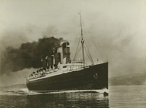
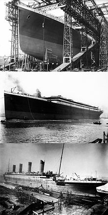

 Joseph Bruce Ismay, presidente de la compañía de buques White Star Line, y lord William Pirrie, presidente de los astilleros Harland and Wolff, decidieron en 1907 construir tres buques para competir con el RMS Lusitania y el RMS Mauretania de la compañía rival Cunard Line. Estos nuevos barcos serían los mayores, más lujosos y más seguros construidos hasta entonces, ya que para los dos hombres la mejor apuesta era competir con sus rivales británicos y alemanes en elegancia en lugar de en velocidad. Después, fueron elegidos los nombres Olympic, Titanic y Gigantic (después cambiado a Britannic), en referencia a las tres razas de la mitología griega: los olímpicos, los titanes y los gigantes. El proyecto para construir las tres embarcaciones fue realizado en las oficinas de Harland & Wolff en Belfast, Irlanda. Los diseñadores fueron William Pirrie; su sobrino Thomas Andrews, gerente de construcción y jefe del departamento de diseño de Harland and Wolff, y su cuñado Alexander Carlisle, el diseñador jefe y gerente general del astillero. Las responsabilidades de Carlisle incluían las decoraciones, los equipamientos, los dispositivos de seguridad y todos los arreglos generales, incluyendo la implementación de un sistema eficiente de pescantes para los botes salvavidas.
 Los planos finales fueron concluidos en el otoño de 1908 y los materiales necesarios para la construcción fueron encomendados por Harland & Wolff. El Titanic fue construido junto a su gemelo, el Olympic. Un nuevo pórtico de 256 metros de largo por 52 metros de altura necesitó ser construido para acomodar ambos buques, ya que ninguna otra estructura existente era lo bastante grande para el trabajo. El Titanic fue construido con el número de construcción 401. Su construcción fue financiada por el empresario estadounidense J. P. Morgan y su empresa International Mercantile Marine Company, y comenzó el 31 de marzo de 1909, con un costo total de 7,5 millones de dólares de la época, es decir, unos 172 millones de dólares al cambio actual. Para poder diferenciar a los dos hermanos, el Olympic fue construido con su casco pintado de gris claro, mientras que el Titanic fue construido con el casco pintado de negro. Los trabajos de construcción de su estructura progresaron a un buen ritmo y fueron completados a principios de 1911. Su casco estaba formado por aproximadamente dos mil placas de acero que medían tres metros de largo por dos metros de ancho, con un grosor de entre 2,5 y 3,8 centímetros. Esas placas se mantenían unidas por más de tres millones de remaches.